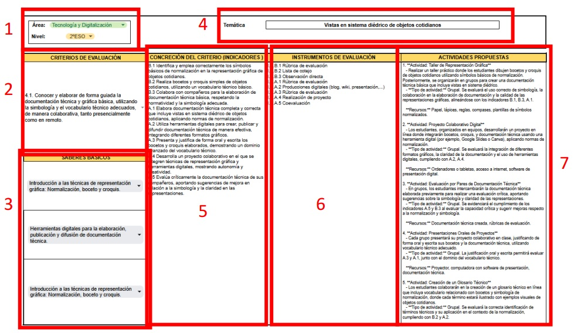
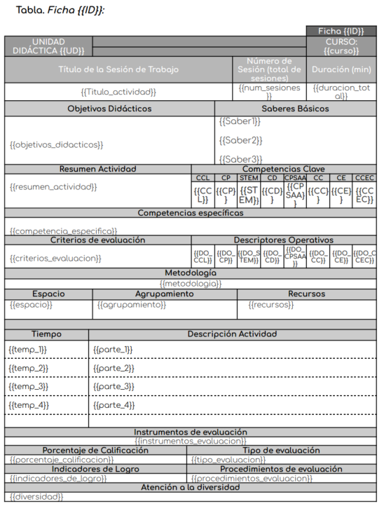

Origen y primeros pasos
El punto de partida de este ecosistema fue un prototipo inicial derivado del Trabajo Final de Master realizado en 2024 y titulado "Creación de herramienta de soporte al docente para generar y personalizar actividades didácticas con el uso de Inteligencia Artificial" al que se bautizó como Programa de Ayuda y Justificación Automática.
Este primer desarrollo se basaba en una hoja de cálculo que mediante una extensión incorpora la IA en la propia hoja de cálculo y permite intearctuar directamente con la información incluida en las celdas con el objetivo de generar actividades didácticas personalizadas y adaptadas al estilo de aprendizaje de cada estudiante.

Sin embargo, la puesta en práctica de este enfoque reveló ciertas limitaciones estructurales. Por un lado, la recopilación de datos requería un proceso manual e individualizado (alumno por alumno) que resultaba inviable a gran escala. Por otro lado, el sistema carecía en ese momento de una arquitectura de memoria volátil o persistente para almacenar dicha información de forma eficiente.
A pesar de estas restricciones en la personalización masiva, el prototipo demostró una efectividad y solvencia reales en la práctica docente en un área clave: la generación y automatización de unidades didácticas. El éxito en este apartado se debió a la propia arquitectura del sistema, la cual tenía totalmente mapeada la información curricular aprovechando la inclusión de macros o App Script en la propia hoja de cálculo automatizando de esta manera tareas mecánicas como el rellenado de las diferentes unidades didácticas con su correspondiente información curricular, simplificando y normalizando su redacción.

Este diseño estructural permitía operar con los elementos normativos de manera simplificada y directa, validando la viabilidad del proyecto y sentando las bases analíticas para el desarrollo del actual motor de ALMENDRA.